Ein illustriertes Geschichtsbuch
Die Geschichte der Schweiz
Zweitausend Jahre – von den Helvetiern bis heute
38 Kapitel · 25 Zwischenkapitel · 549 Bilder · 67 Karten
Mit dem Lesen beginnen →Vorwort
Warum spricht man in einem so kleinen Land vier Sprachen? Warum hat die Schweiz keinen Präsidenten, der das Land regiert, sondern sieben gleichberechtigte Bundesräte? Warum stimmen die Menschen hier mehrmals im Jahr über Sachfragen ab, warum ist das Land neutral, und warum besteht es aus 26 Kantonen, die zum Teil kleiner sind als eine Grossstadt?
Die Antworten liegen in der Geschichte. Dieses Buch erzählt sie Seite für Seite – von den Helvetiern, die im Jahr 58 vor Christus ihre Heimat verlassen wollten, über die Bündnisse der Talschaften und Städte im Mittelalter, die Glaubenskriege, die französische Besetzung und den Bürgerkrieg von 1847 bis zum modernen Bundesstaat und den Fragen unserer Gegenwart.
Dabei gilt ein Grundsatz: Was erzählt wird, soll belegbar sein. Wo die Überlieferung unsicher ist oder wo eine Legende die Geschichte überlagert – wie bei Wilhelm Tell oder Winkelried –, sagt das Buch das deutlich. Jedes Kapitel nennt am Ende seine Quellen, vor allem das Historische Lexikon der Schweiz. Kästen mit der Überschrift «Vergessene Geschichte» erinnern an Ereignisse und Menschen, die aus dem allgemeinen Gedächtnis verschwunden sind. Die Kästen «Was davon bleibt» zeigen, wie die Vergangenheit die heutige Schweiz geprägt hat.
Zwischen den 38 Kapiteln liegen Zwischenkapitel, jedes mit einem Band über dem Titel gekennzeichnet: Die Überblicke erklären, wer über wem stand – Kaiser, Bischöfe, Grossmächte, Landvögte. Vor der Schweiz erzählt, was Graubünden, das Tessin, Genf oder der Jura waren, bevor sie Kantone wurden. Nebengeschichten handeln von Menschen und Ereignissen, die die Schweiz nicht geformt haben, aber wahr und erstaunlich sind – vom Geissbuben, der Gelehrter wurde, bis zu Einstein im Berner Patentamt. Und die Legenden erzählen alte Sagen, mit allem, was man über ihre Herkunft weiss.
Die Bilder sind Gemälde, Chronik-Illustrationen, Stiche und Fotografien aus den vergangenen Jahrhunderten, viele davon von Künstlern, die selbst Zeitzeugen waren – wie die Chronisten des 15. Jahrhunderts, die Schlachten und Feste mit eigenen Augen gesehen hatten. Die Karten wurden eigens für dieses Buch gezeichnet. Hinter den Texten schimmern Aquarelle und kolorierte Ansichten von Schweizer Landschaften aus dem 18. und 19. Jahrhundert – jeweils aus der Gegend, von der das Kapitel erzählt.
Mit den Pfeiltasten ← und → lässt sich wie in einem Buch blättern. Ein Klick auf ein Bild vergrössert es. Viel Vergnügen bei der Reise durch zweitausend Jahre.
Inhalt
Teil I Kelten, Römer und Klöster 58 v. Chr. – 1032
 1Helvetier und Römer58 v. Chr. – 260Wie die keltischen Helvetier 58 v. Chr. auszogen und bei Bibracte scheiterten – und wie Rom das Land mit Städten, Strassen und Gutshöfen veränderte.
1Helvetier und Römer58 v. Chr. – 260Wie die keltischen Helvetier 58 v. Chr. auszogen und bei Bibracte scheiterten – und wie Rom das Land mit Städten, Strassen und Gutshöfen veränderte.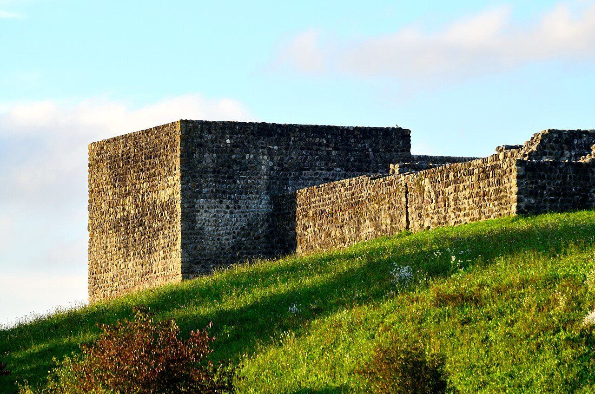
2Mauern, Märtyrer und Burgunder260 – 534Wie die Römer nach 260 ihre Grenze am Rhein befestigten, wie das Christentum ins Land kam und wie Burgunder und Franken das Erbe Roms antraten.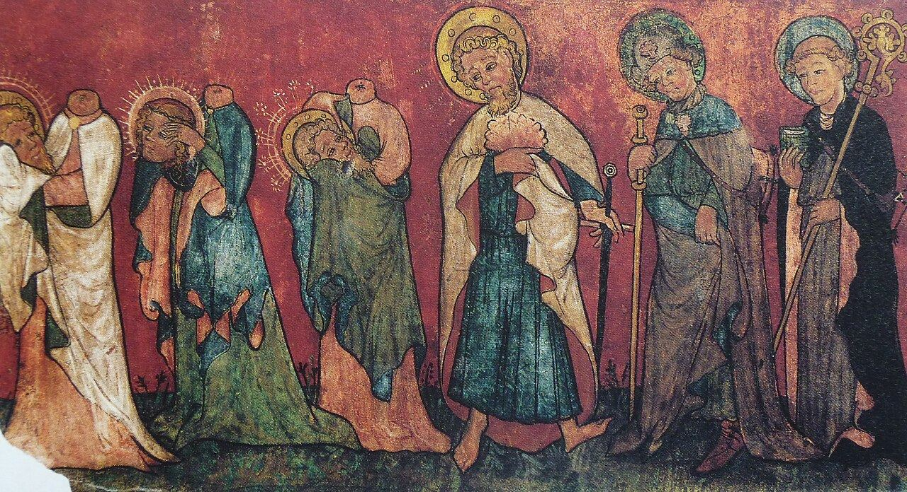
❦Mauritius und die Thebäische LegionLegende · um 380 – 1525Wie aus einem Märtyrergrab am Felsen von Agaunum eine Legende wurde, die Kloster, Städte und Kaiser prägte – und was davon belegt ist.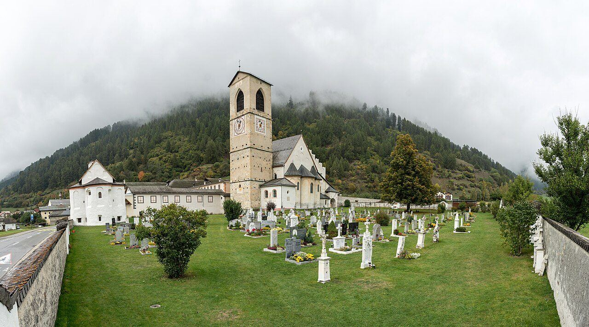
3Mönche, Alamannen und Romanen534 – 888Wie Alamannen und Romanen das Land unter sich aufteilten, wie die Sprachgrenze entstand und wie Gallus, Otmar und ihre Nachfolger St. Gallen zu einem Zentrum der Schriftkultur machten. 4Das Königreich Hochburgund888 – 1032Wie die Welfen 888 in Saint-Maurice ein eigenes Königreich gründeten, wie Ungarn und Sarazenen das Land heimsuchten und wie die Schweiz 1032/33 ganz zum Reich kam.
4Das Königreich Hochburgund888 – 1032Wie die Welfen 888 in Saint-Maurice ein eigenes Königreich gründeten, wie Ungarn und Sarazenen das Land heimsuchten und wie die Schweiz 1032/33 ganz zum Reich kam.
Teil II Die Entstehung der Eidgenossenschaft 1032 – 1393
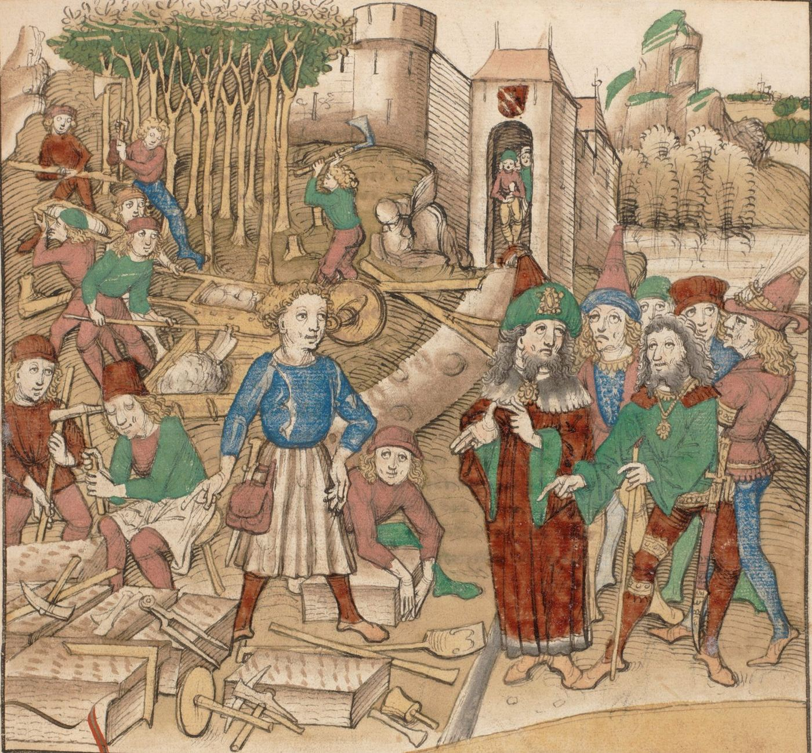
5Grafen, Bischöfe und neue Städte1032 – 1291Wie Zähringer, Kyburger, Habsburger und Savoyer zwischen 1032 und 1291 um Land und Macht rangen – und dabei Burgen, Klöster und fast zweihundert Städte entstanden. ❦Kaiser, Reich und Lehen – wer im Mittelalter herrschteÜberblick · 900 – 1648Wie das Heilige Römische Reich funktionierte – Wahlkönig, Lehen, Grundherrschaft, Vogtei und Blutbann – und wie die Eidgenossen in dieser Ordnung gross wurden und sich bis 1648 aus ihr lösten.
❦Kaiser, Reich und Lehen – wer im Mittelalter herrschteÜberblick · 900 – 1648Wie das Heilige Römische Reich funktionierte – Wahlkönig, Lehen, Grundherrschaft, Vogtei und Blutbann – und wie die Eidgenossen in dieser Ordnung gross wurden und sich bis 1648 aus ihr lösten.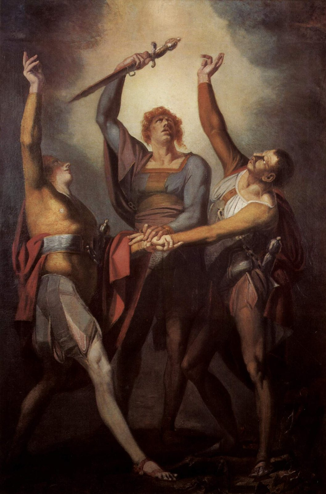
61291: Der Bund der Waldstätte1231 – 1315Wie Uri, Schwyz und Unterwalden sich 1291 verbündeten – und wie aus einem nüchternen Rechtsdokument ein Gründungsmythos wurde. 7Morgarten und die acht alten Orte1314 – 1353Wie aus einem Weidestreit die Schlacht am Morgarten wurde und wie sich bis 1353 Luzern, Zürich, Glarus, Zug und Bern den Waldstätten anschlossen.
7Morgarten und die acht alten Orte1314 – 1353Wie aus einem Weidestreit die Schlacht am Morgarten wurde und wie sich bis 1353 Luzern, Zürich, Glarus, Zug und Bern den Waldstätten anschlossen. ❦Bevor sie Eidgenossen wurden: Luzern, Zürich, Glarus, Zug und BernVor der Schweiz · um 750 – 1353Was Luzern, Zürich, Glarus, Zug und Bern waren und taten, bevor sie sich zwischen 1332 und 1353 mit den Waldstätten verbündeten.
❦Bevor sie Eidgenossen wurden: Luzern, Zürich, Glarus, Zug und BernVor der Schweiz · um 750 – 1353Was Luzern, Zürich, Glarus, Zug und Bern waren und taten, bevor sie sich zwischen 1332 und 1353 mit den Waldstätten verbündeten.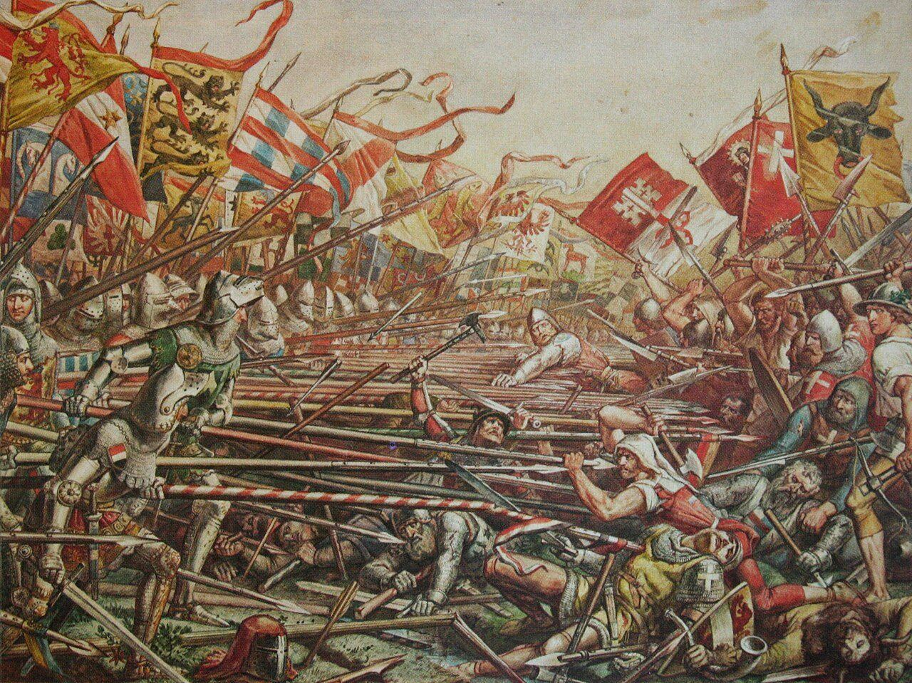
8Pest, Beben und die Schlacht bei Sempach1348 – 1394Pest und Judenverfolgung, das Erdbeben von Basel, die Gugler und die Siege von Sempach und Näfels: wie die Eidgenossenschaft eine Zeit der Krisen überstand.
Teil III Die Eidgenossen als Kriegsmacht 1400 – 1527
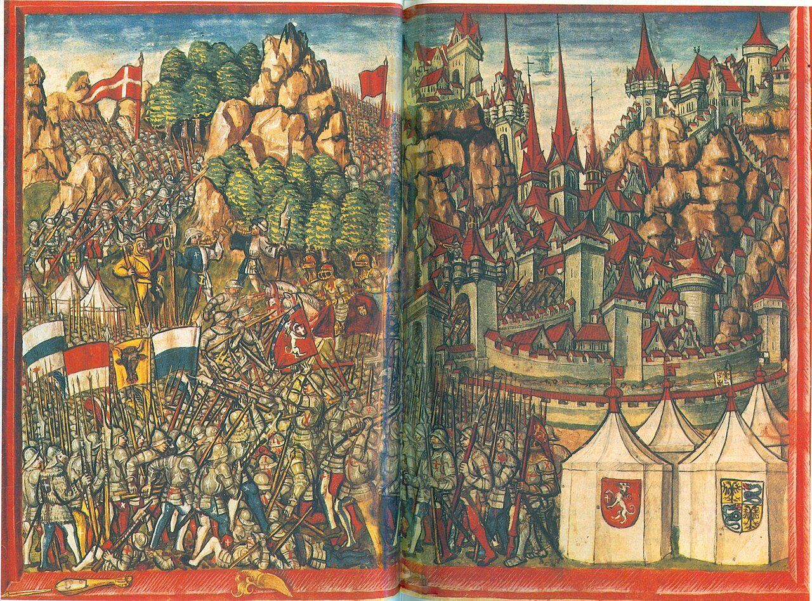
9Die Eidgenossen greifen aus1400 – 1440Wie die Eidgenossen nach 1400 nach Appenzell, in den Aargau und über den Gotthard ausgriffen – und wie im Wallis und in Graubünden eigene Bünde entstanden. 10Der Alte Zürichkrieg1436 – 1468Wie der Streit um das Toggenburger Erbe Zürich an die Seite Habsburgs trieb, warum die Eidgenossen danach dennoch zusammenblieben – und wie Basel, der Thurgau und Mülhausen in ihren Bannkreis gerieten.
10Der Alte Zürichkrieg1436 – 1468Wie der Streit um das Toggenburger Erbe Zürich an die Seite Habsburgs trieb, warum die Eidgenossen danach dennoch zusammenblieben – und wie Basel, der Thurgau und Mülhausen in ihren Bannkreis gerieten. 11Die Burgunderkriege1474 – 1478Wie Bern und der König von Frankreich die Eidgenossen in den Krieg gegen Karl den Kühnen zogen – und wie Grandson, Murten und Nancy den Ruf der Schweizer Krieger in ganz Europa begründeten.
11Die Burgunderkriege1474 – 1478Wie Bern und der König von Frankreich die Eidgenossen in den Krieg gegen Karl den Kühnen zogen – und wie Grandson, Murten und Nancy den Ruf der Schweizer Krieger in ganz Europa begründeten.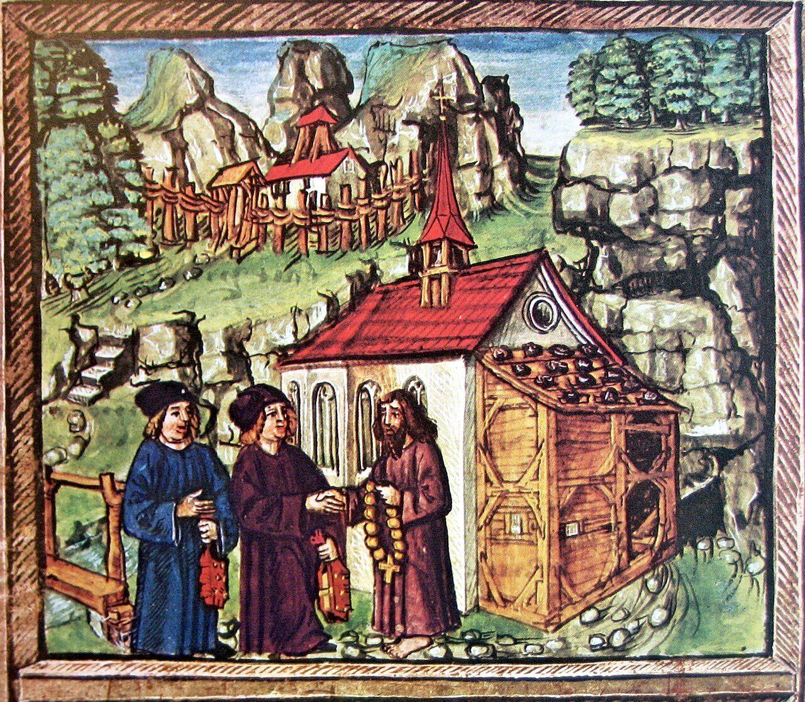
12Stans 1481: Die Eidgenossen streiten über den Sieg1477 – 1490Wie der Streit zwischen Städten und Ländern nach den Burgunderkriegen die Eidgenossenschaft fast sprengte – und wie das Stanser Verkommnis von 1481 den Bund rettete.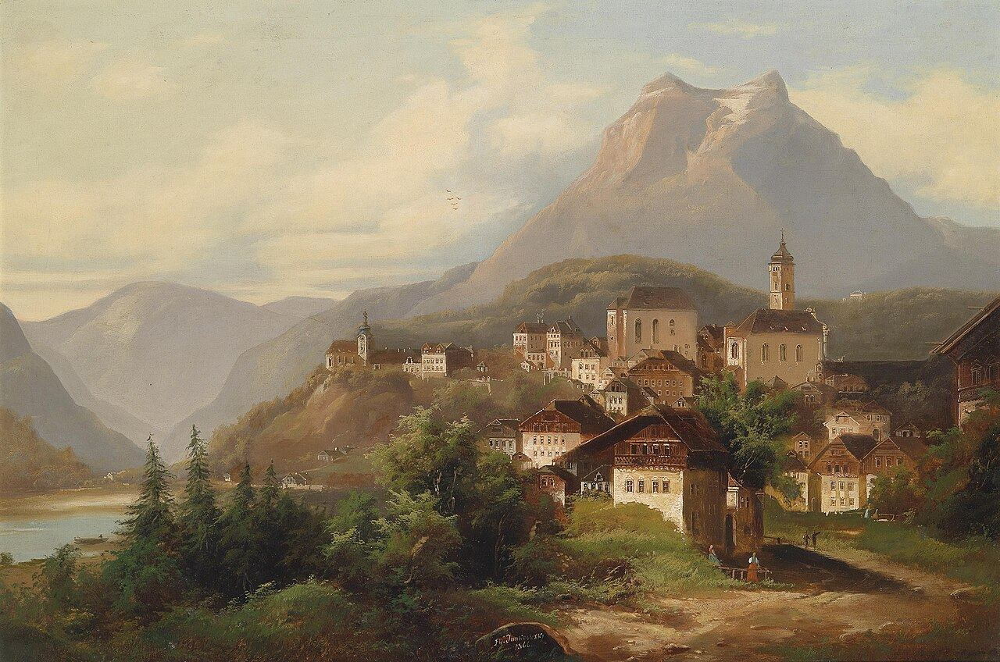
❦Der Drache und der Geist vom PilatusLegende · 1387 – 1723Wie Luzern einen Berg verbot, weil im Bergsee der Geist des Pilatus spukte – und wie Gelehrte, Pfarrer und Naturforscher mit Geistern und Drachen umgingen.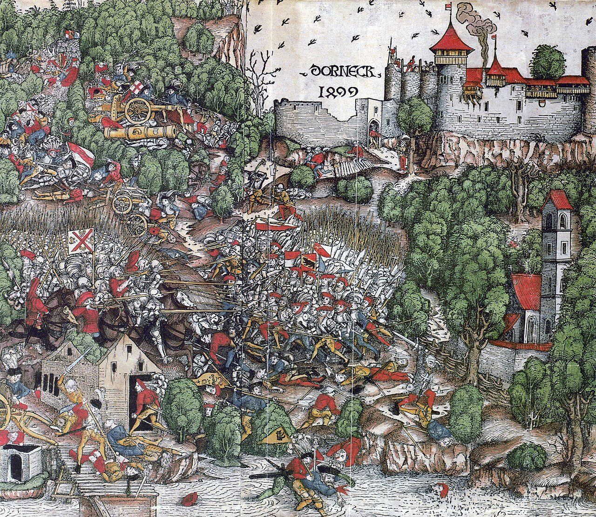
13Der Schwabenkrieg und die dreizehn Orte1495 – 1513Wie die Eidgenossen sich der Reichsreform Maximilians verweigerten, den Schwabenkrieg von 1499 gewannen und bis 1513 zum Bund der dreizehn Orte wurden. ❦Fünf Wege in den Bund: Freiburg, Solothurn, Basel, Schaffhausen und AppenzellVor der Schweiz · um 1000 – 1513Was Freiburg, Solothurn, Basel, Schaffhausen und Appenzell waren und taten, bevor sie zwischen 1481 und 1513 Orte der Eidgenossenschaft wurden.
❦Fünf Wege in den Bund: Freiburg, Solothurn, Basel, Schaffhausen und AppenzellVor der Schweiz · um 1000 – 1513Was Freiburg, Solothurn, Basel, Schaffhausen und Appenzell waren und taten, bevor sie zwischen 1481 und 1513 Orte der Eidgenossenschaft wurden. 14Marignano: Die Söldner Europas1494 – 1527Wie eidgenössische Reisläufer in den Italienkriegen zur gefragtesten Truppe Europas wurden, das Tessin eroberten – und 1515 bei Marignano ihre Grossmachtzeit beendeten.
14Marignano: Die Söldner Europas1494 – 1527Wie eidgenössische Reisläufer in den Italienkriegen zur gefragtesten Truppe Europas wurden, das Tessin eroberten – und 1515 bei Marignano ihre Grossmachtzeit beendeten.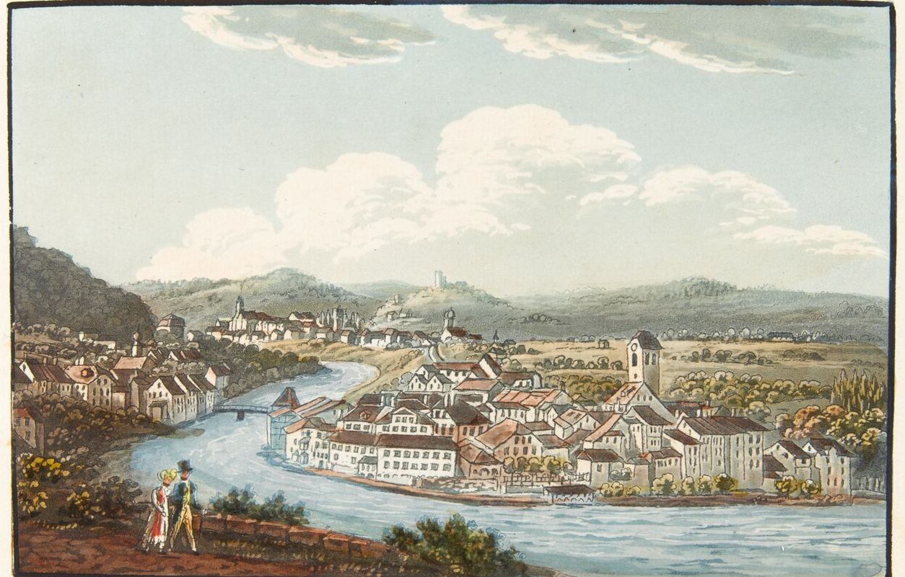
❦Orte, Zugewandte und UntertanenÜberblick · 1291 – 1798Ein Netz von Bünden statt eines Staates: wie die dreizehn Orte, ihre Zugewandten und Schirmgebiete zusammenhingen, was die Tagsatzung durfte und wie Landvögte die gemeinsamen Untertanenlande regierten.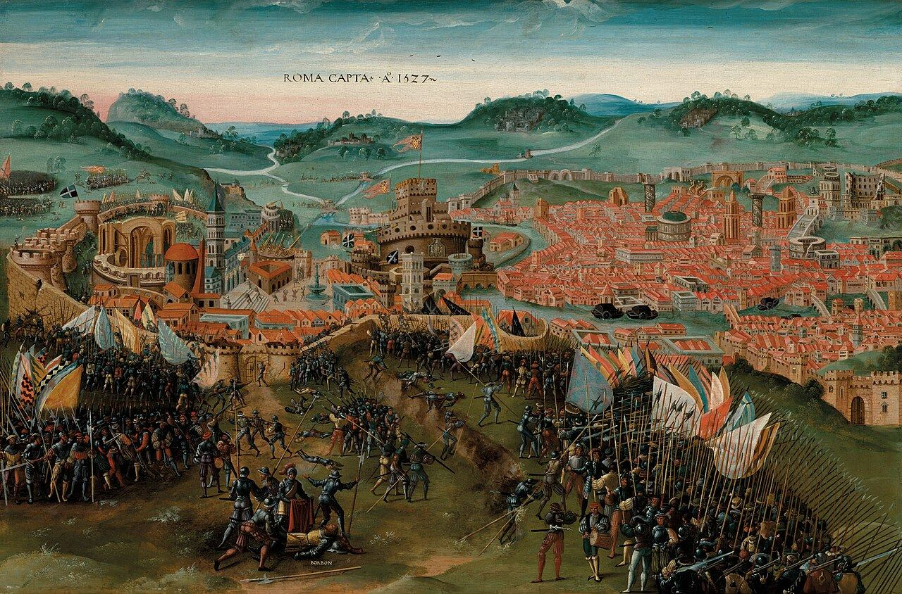
❦Der Sacco di Roma – die Schweizergarde am 6. Mai 1527Nebengeschichte · 1505 – 1527Wie die junge Päpstliche Schweizergarde am 6. Mai 1527 beim Sturm auf Rom fast vollständig unterging – und warum neue Gardisten bis heute an diesem Tag schwören.
Teil IV Glaube und Spaltung 1519 – 1712
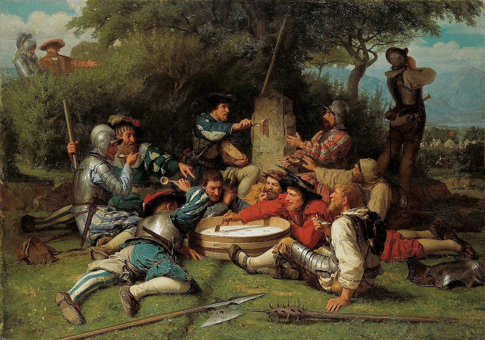
15Zwingli und die Reformation in Zürich1519 – 1531Wie Huldrych Zwingli Zürich reformierte, der neue Glaube Bern und Basel erfasste – und die Eidgenossenschaft nach der Schlacht bei Kappel 1531 in zwei Konfessionen zerfiel.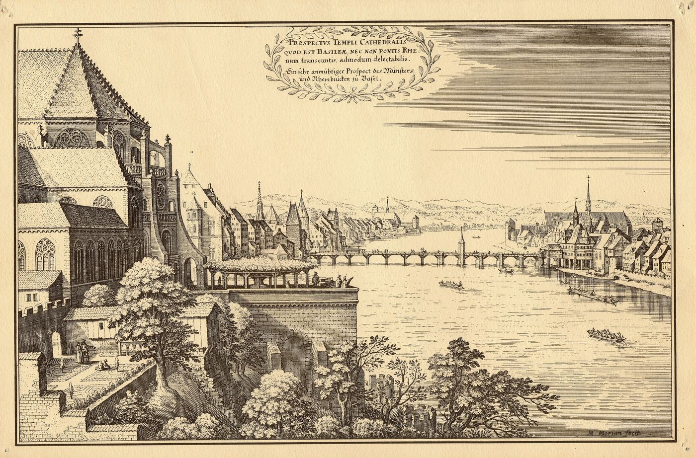
❦Thomas Platter – vom Geissbuben zum BuchdruckerNebengeschichte · 1499 – 1582Wie ein Walliser Hirtenbub als bettelnder Schüler durch halb Europa zog, in Zürich Zwinglis Bote und Seilergeselle wurde und in Basel als Drucker und Schulmeister endete – erzählt in einer der besten Autobiografien des 16. Jahrhunderts.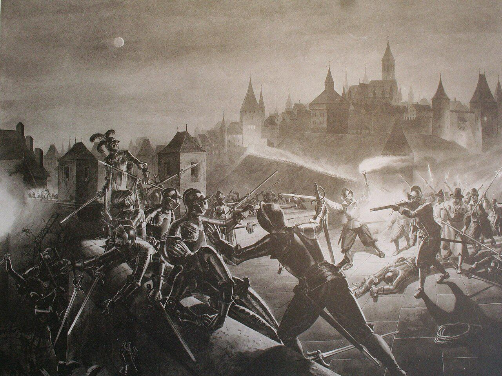
16Calvins Genf und die Welt der Reformierten1526 – 1602Wie Genf mit Berns Hilfe frei wurde, Calvin die Stadt zum Zentrum des reformierten Glaubens machte und Zürich und Genf gemeinsam eine weltweite Kirche prägten. ❦Paracelsus – der Arzt, der die Lehrbücher verbrannteNebengeschichte · 1493/94 – 1541Wie Theophrastus von Hohenheim aus Einsiedeln die Basler Ärzte gegen sich aufbrachte, als Wanderarzt durch St. Gallen und Appenzell zog und der Medizin den Satz «allein die Dosis macht das Gift» hinterliess.
❦Paracelsus – der Arzt, der die Lehrbücher verbrannteNebengeschichte · 1493/94 – 1541Wie Theophrastus von Hohenheim aus Einsiedeln die Basler Ärzte gegen sich aufbrachte, als Wanderarzt durch St. Gallen und Appenzell zog und der Medizin den Satz «allein die Dosis macht das Gift» hinterliess.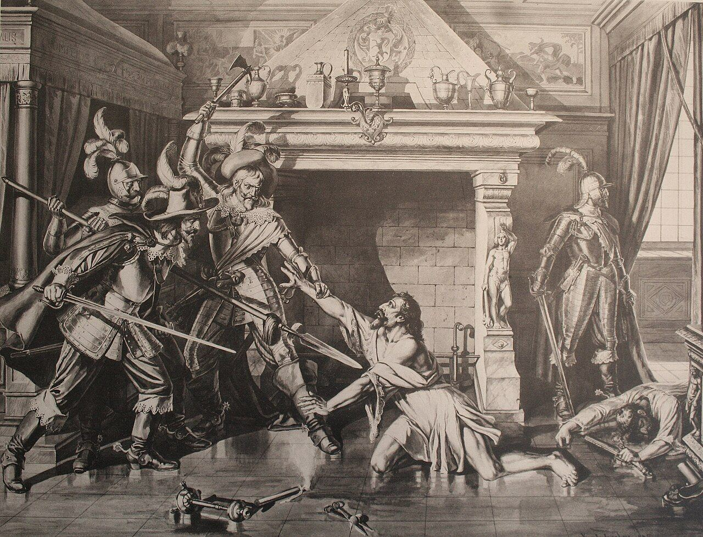
17Gegenreformation und Bündner Wirren1560 – 1648Wie die katholischen Orte sich nach dem Konzil von Trient erneuerten, Graubünden im Kampf um das Veltlin zerrissen wurde und die Eidgenossenschaft 1648 aus dem Reich ausschied.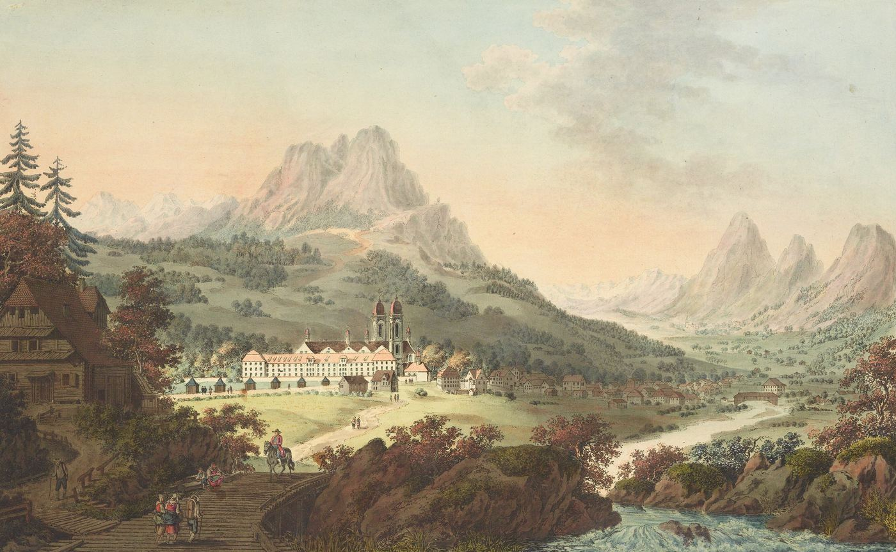
❦Bischöfe, Äbte und der Papst – die Kirche als LandesherrinÜberblick · 999 – 1848Wie Bischöfe und Äbte als Landesherren regierten, wer Zehnten zahlte und Kirchengerichte fürchtete, was der Nuntius in Luzern wollte – und wie Reformation und Revolution die geistlichen Staaten beendeten.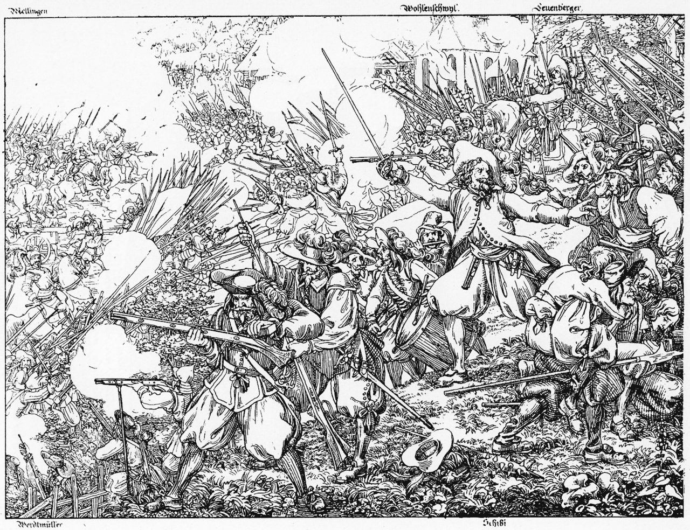
18Der Bauernkrieg und die Villmergerkriege1653 – 1712Wie Schulden und Geldentwertung 1653 den grössten Volksaufstand der alten Eidgenossenschaft auslösten – und wie die beiden Villmergerkriege das Kräfteverhältnis zwischen den Konfessionen neu ordneten.
Teil V Gnädige Herren und Aufklärer 1648 – 1797
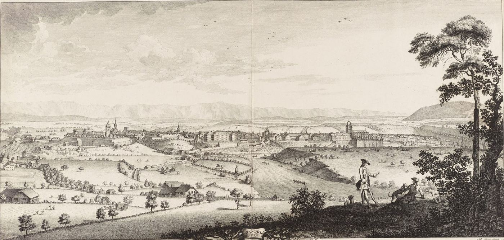
19Gnädige Herren und Untertanen1648 – 1790Wie Patrizier, Zünfte und Landsgemeinden die alte Eidgenossenschaft regierten, wie Landvögte über Untertanen walteten – und warum Davel, Henzi, Chenaux und Anna Göldi sterben mussten.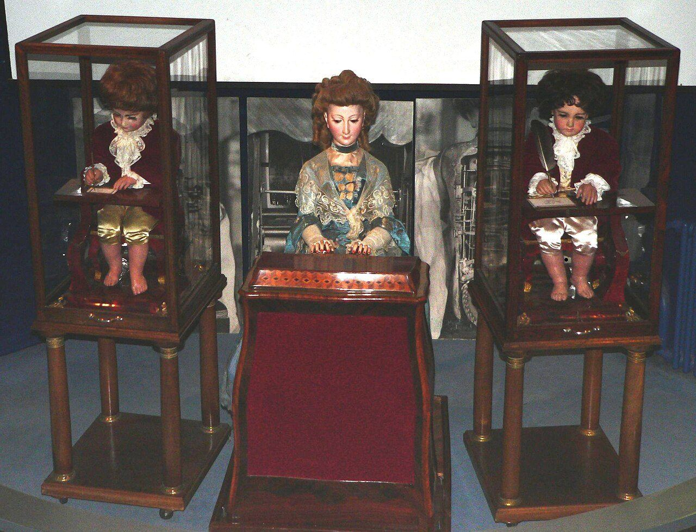
20Uhren, Seide und Söldner1650 – 1790Hugenotten, Heimarbeit, Uhrmacherei, Solddienst und Kolonialhandel: wie die Schweiz im 18. Jahrhundert zu einem der am stärksten gewerblich geprägten Länder Europas wurde. ❦Im Spiel der Grossmächte – Frankreich, Habsburg und die EidgenossenÜberblick · 1474 – 1815Wie Habsburg, Frankreich, Spanien, Savoyen und Venedig mit Verträgen, Pensionen und Gesandten um die Eidgenossen warben – und warum die Grossmächte 1815 ihre Neutralität garantierten.
❦Im Spiel der Grossmächte – Frankreich, Habsburg und die EidgenossenÜberblick · 1474 – 1815Wie Habsburg, Frankreich, Spanien, Savoyen und Venedig mit Verträgen, Pensionen und Gesandten um die Eidgenossen warben – und warum die Grossmächte 1815 ihre Neutralität garantierten.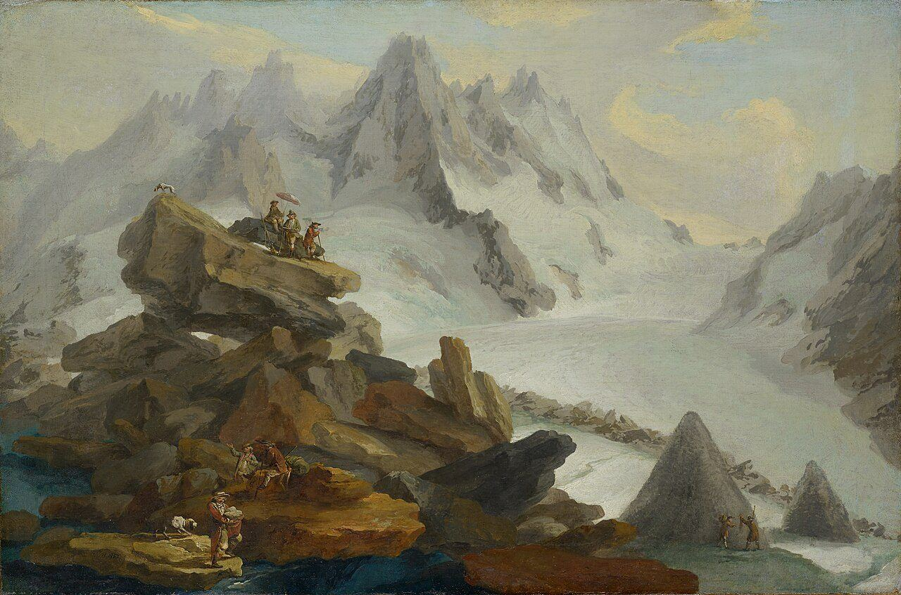
21Die Entdeckung der Alpen1700 – 1797Scheuchzer, Haller, Rousseau, Euler und Saussure: wie Gelehrte und Reisende im 18. Jahrhundert die Alpen entdeckten und die Schweiz zu einem Land der Aufklärung wurde.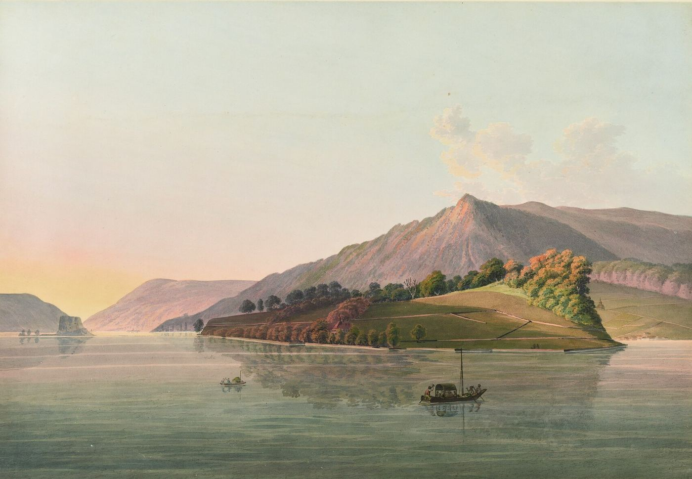
❦Rousseau – der Bürger von Genf auf der FluchtNebengeschichte · 1762 – 1765Wie der berühmteste Genfer seiner Zeit drei Jahre lang durch die Westschweiz gejagt wurde, auf sein Bürgerrecht verzichtete und auf der St. Petersinsel ein Glück fand, von dem er bis zu seinem Tod schrieb.
Teil VI Revolution und Neuordnung 1798 – 1847
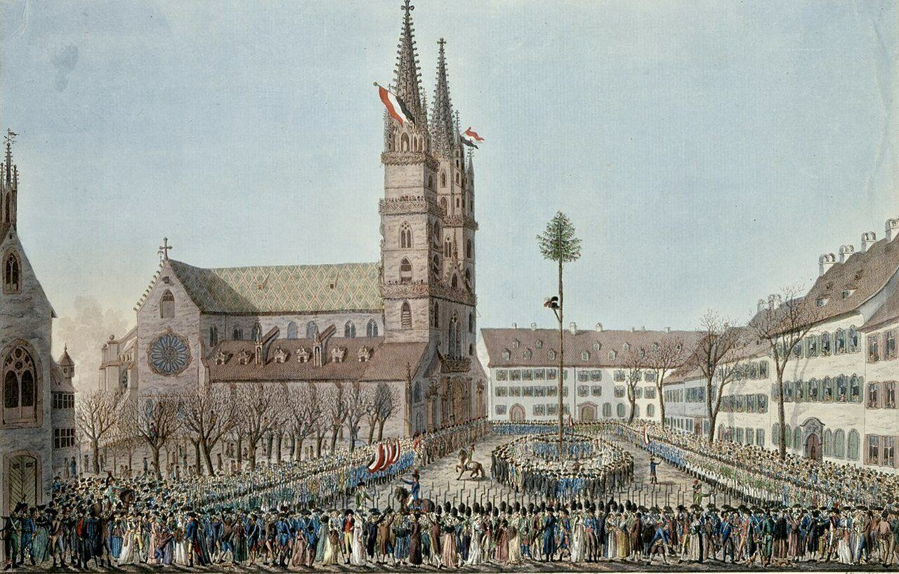
22Die Helvetische Republik1798 – 1803Wie die Französische Revolution die alte Eidgenossenschaft zum Einsturz brachte, wie die Helvetische Republik Gleichheit verkündete und warum das Land 1799 zum Schlachtfeld Europas wurde.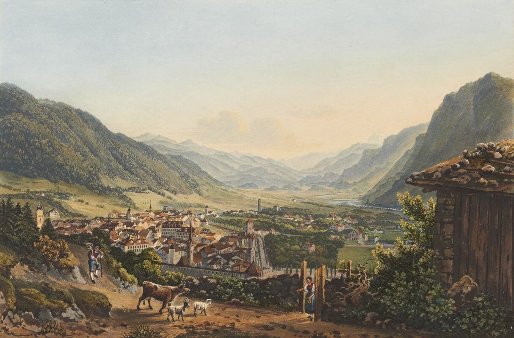
❦Graubünden – der Freistaat der Drei BündeVor der Schweiz · 1367 – 1803Wie drei Bünde von Bauern, Talschaften und Städtchen einen eigenen Staat bildeten, das Veltlin beherrschten und 1803 zum Kanton Graubünden wurden. ❦Tessin – von Como und Mailand zu den ennetbirgischen VogteienVor der Schweiz · 1182 – 1803Wie die Täler zwischen Gotthard und Mendrisio vom Bistum Como und vom Herzogtum Mailand an die Eidgenossen kamen, als Untertanen lebten und 1803 zum Kanton Tessin wurden.
❦Tessin – von Como und Mailand zu den ennetbirgischen VogteienVor der Schweiz · 1182 – 1803Wie die Täler zwischen Gotthard und Mendrisio vom Bistum Como und vom Herzogtum Mailand an die Eidgenossen kamen, als Untertanen lebten und 1803 zum Kanton Tessin wurden.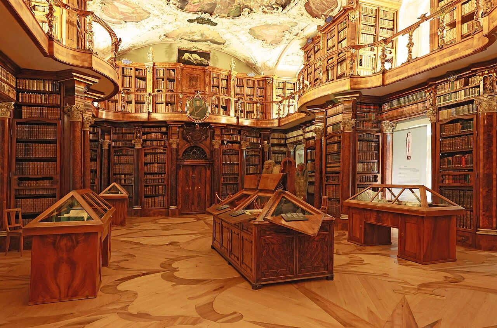
❦Aargau, Thurgau und St. Gallen – vom Untertanenland zum KantonVor der Schweiz · 1415 – 1803Was der Aargau, der Thurgau und die Gebiete des heutigen Kantons St. Gallen waren, bevor sie 1803 Kantone wurden: Untertanenlande, ein Klosterstaat, eine Stadtrepublik und ein Stück Österreich.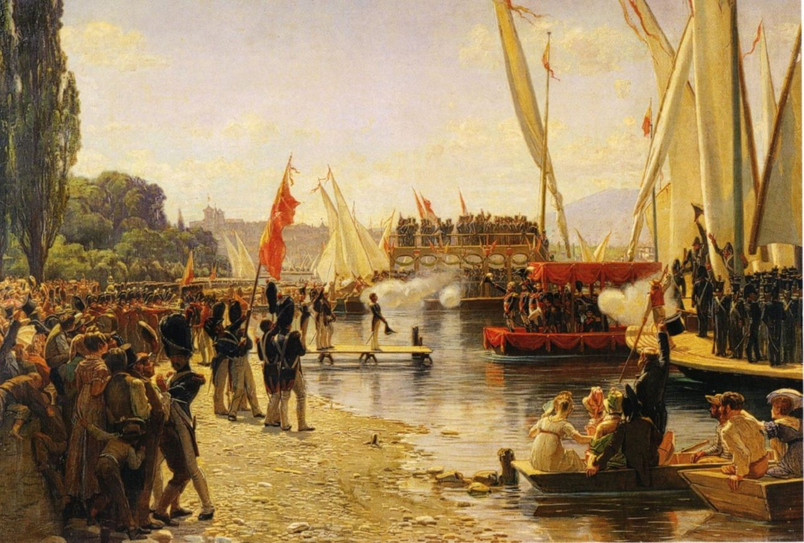
❦Genf und die Waadt – zwischen Savoyen, Bern und FrankreichVor der Schweiz · 1219 – 1816Was die Waadt unter Savoyen und Bern und was die Stadtrepublik Genf war, bevor aus ihnen 1803 und 1815 Schweizer Kantone wurden.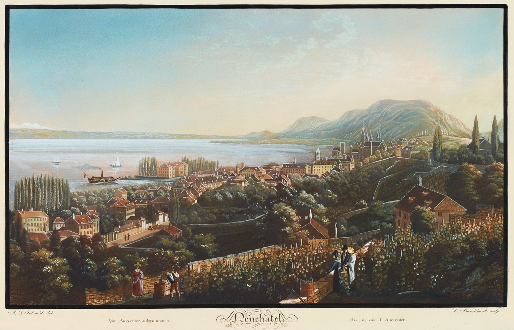
❦Wallis und Neuenburg – ein Bischofsland und ein preussisches FürstentumVor der Schweiz · 999 – 1857Was das Wallis der Bischöfe und Zenden und was das Fürstentum Neuenburg war, bevor beide 1815 Kantone wurden – und warum Neuenburg danach noch über vierzig Jahre einem König gehörte.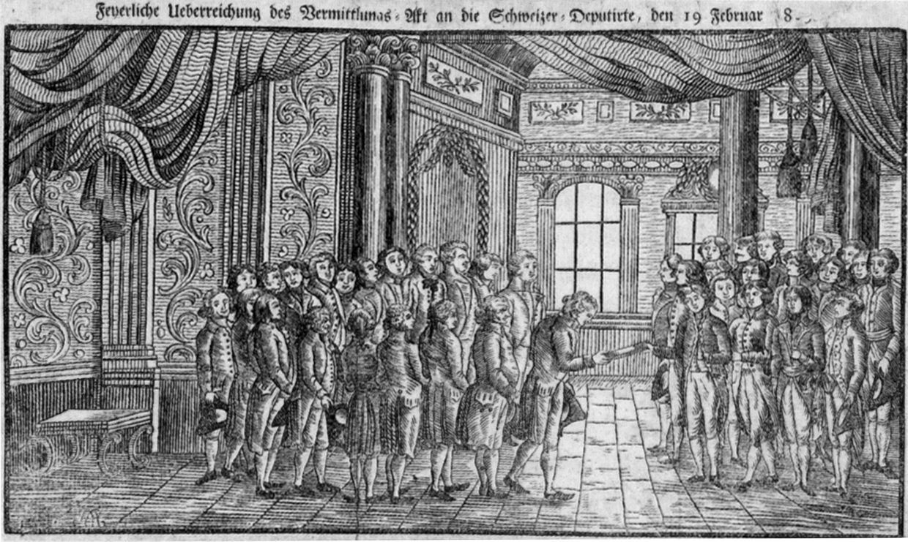
23Napoleons Vermittlung und der Wiener Kongress1803 – 1830Wie Napoleon der Schweiz 1803 eine neue Ordnung gab, warum Schweizer an der Beresina starben und wie der Wiener Kongress 1815 die Grenzen und die Neutralität des Landes festlegte.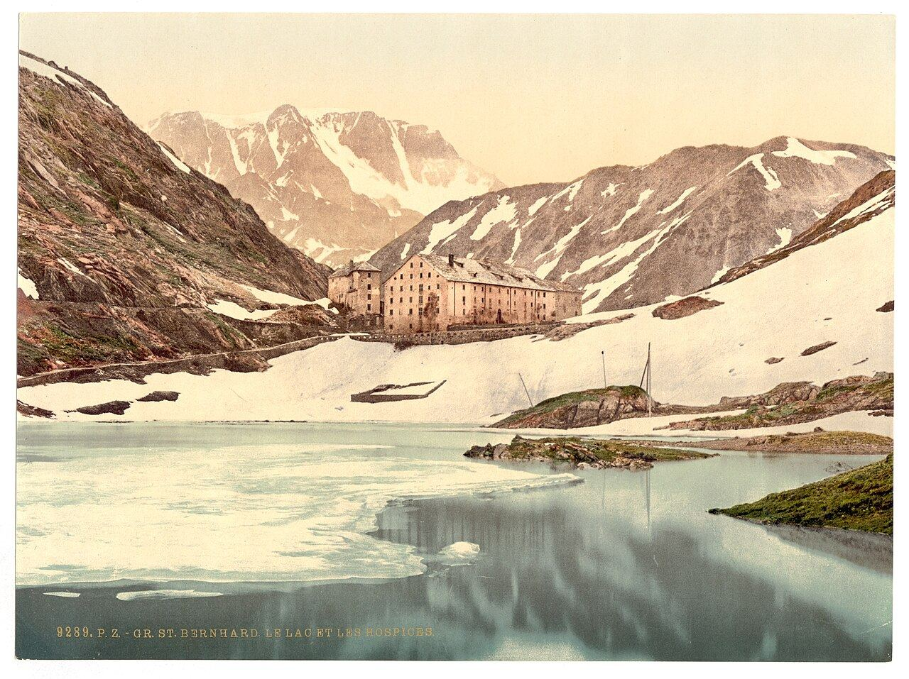
❦Barry – der Hund vom Grossen St. BernhardNebengeschichte · um 1050 – 1923Wie die Chorherren auf dem Grossen St. Bernhard mit ihren Hunden Reisende aus dem Schnee holten – und wie aus dem Hospizhund Barry eine Legende wurde. ❦Das Jahr ohne Sommer – Hunger in der Ostschweiz und Frankenstein am GenferseeNebengeschichte · 1815 – 1819Wie der Ausbruch des Tambora der Schweiz 1816 einen Sommer ohne Sonne brachte – mit einer Hungersnot in der Ostschweiz und einem Gespensterwettbewerb in Cologny, aus dem «Frankenstein» hervorging.
❦Das Jahr ohne Sommer – Hunger in der Ostschweiz und Frankenstein am GenferseeNebengeschichte · 1815 – 1819Wie der Ausbruch des Tambora der Schweiz 1816 einen Sommer ohne Sonne brachte – mit einer Hungersnot in der Ostschweiz und einem Gespensterwettbewerb in Cologny, aus dem «Frankenstein» hervorging.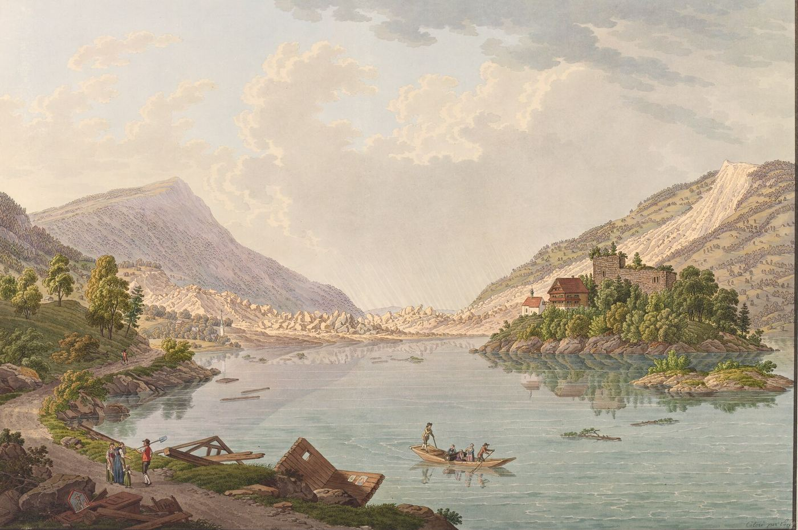
❦Der Bergsturz von GoldauNebengeschichte · 1806Wie am 2. September 1806 ein Teil des Rossbergs Goldau, Röthen, Buosingen und Lauerz verschüttete, wer auf welche Weise überlebte – und wie die Kantone der Mediationszeit gemeinsam halfen.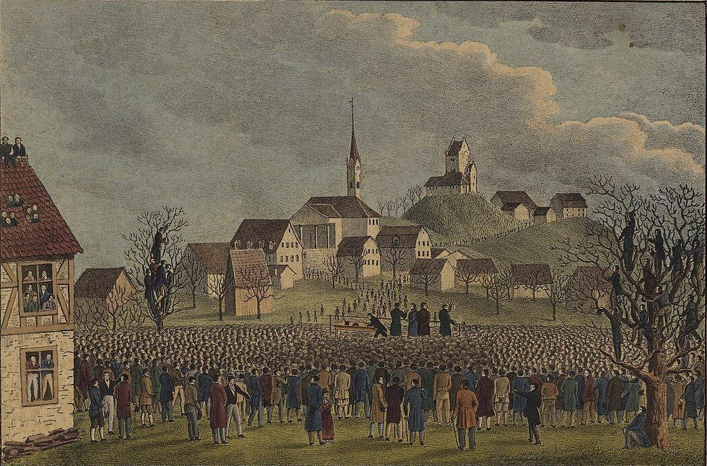
24Die Regeneration: Das Volk verlangt Verfassungen1830 – 1845Wie liberale Volksbewegungen nach 1830 in vielen Kantonen neue Verfassungen, Schulen und Hochschulen durchsetzten – und warum Basel zerbrach, Zürich einen «Putsch» erlebte und der Aargau seine Klöster aufhob. ❦Johann August Sutter – vom Bankrotteur zum Herrn von Neu-HelvetienNebengeschichte · 1803 – 1880Wie ein bankrotter Tuchhändler aus Burgdorf in Kalifornien die Kolonie Neu-Helvetien gründete – auf dem Rücken indigener Zwangsarbeiter – und vom Goldrausch überrollt wurde.
❦Johann August Sutter – vom Bankrotteur zum Herrn von Neu-HelvetienNebengeschichte · 1803 – 1880Wie ein bankrotter Tuchhändler aus Burgdorf in Kalifornien die Kolonie Neu-Helvetien gründete – auf dem Rücken indigener Zwangsarbeiter – und vom Goldrausch überrollt wurde.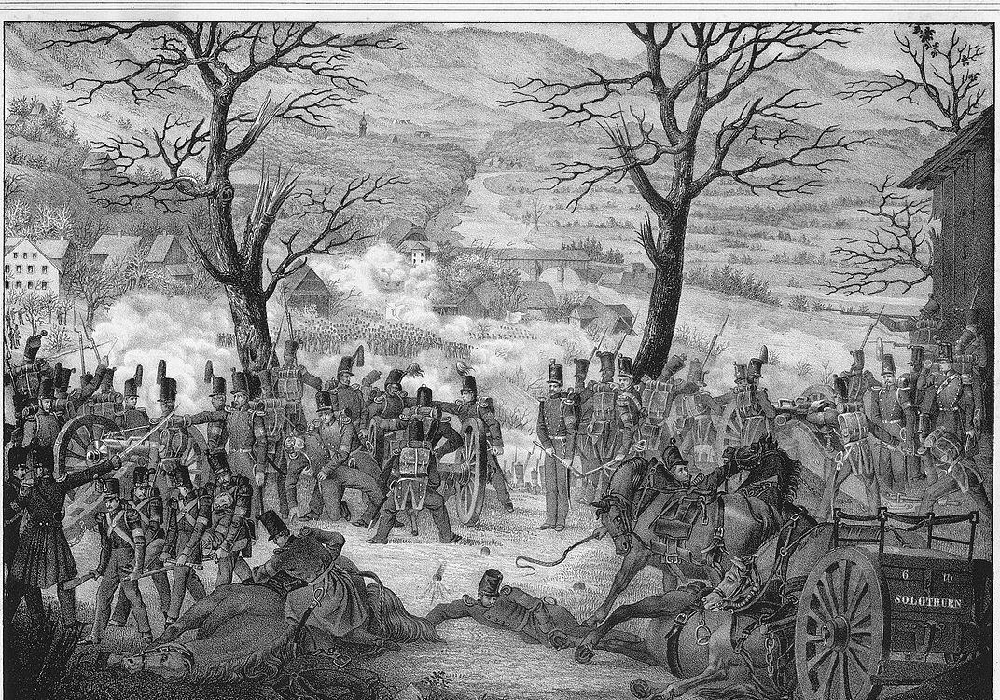
25Der Sonderbundskrieg1844 – 1847Wie der Streit um Klöster und Jesuiten die Schweiz 1847 in einen kurzen Bürgerkrieg trieb – und warum ausgerechnet dieser Krieg den Weg zum Bundesstaat öffnete.
Teil VII Der junge Bundesstaat 1848 – 1914
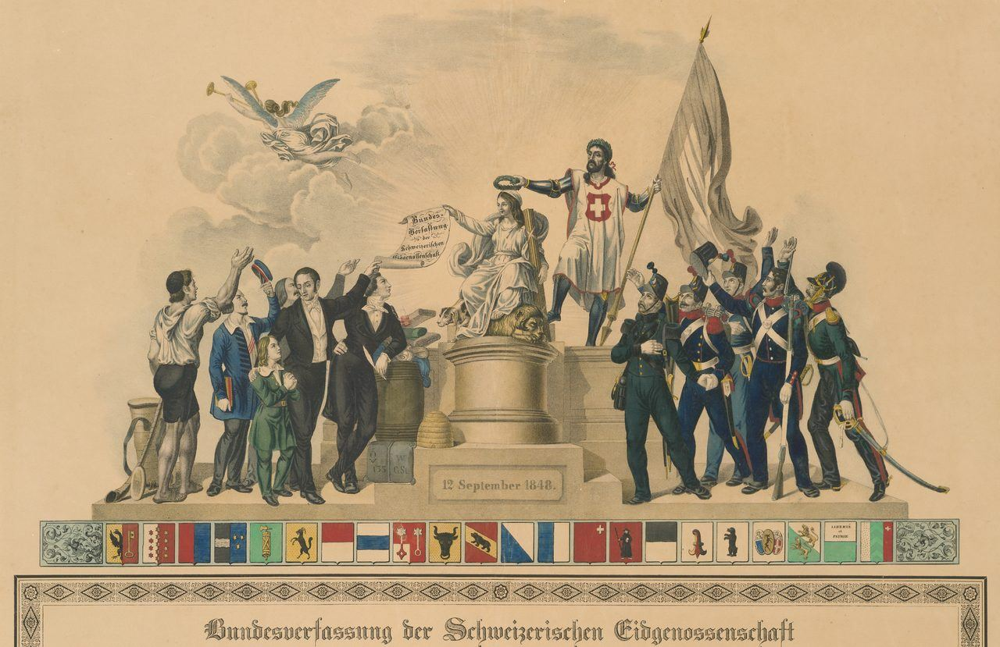
261848: Die Schweiz wird ein Bundesstaat1848 – 1874Wie nach dem Sonderbundskrieg in wenigen Wochen die Bundesverfassung entstand, wie der junge Bundesstaat Geld, Post und Zölle vereinheitlichte – und wie er 1874 seine Verfassung erneuerte.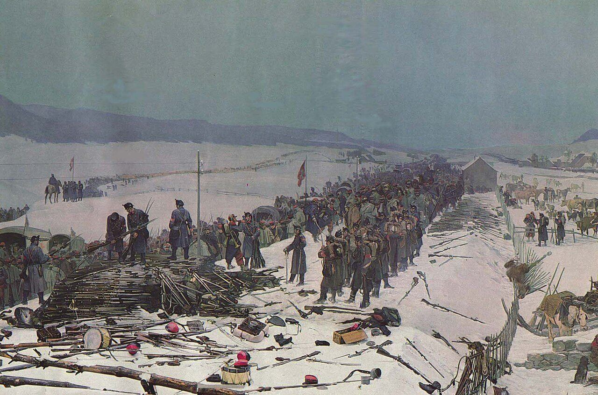
27Henri Dunant und die humanitäre Schweiz1859 – 1914Wie aus dem Schock von Solferino das Rote Kreuz und die Genfer Konvention wurden – und wie die neutrale Schweiz ihre Rolle als Helferin und Gastgeberin der Welt fand. 28Eisenbahn und Gotthard1847 – 1913Von der Spanisch-Brötli-Bahn zum Gotthardtunnel: wie Unternehmer, Ingenieure und Tausende Arbeiter die Schweiz ans europäische Bahnnetz anschlossen – und welchen Preis das hatte.
28Eisenbahn und Gotthard1847 – 1913Von der Spanisch-Brötli-Bahn zum Gotthardtunnel: wie Unternehmer, Ingenieure und Tausende Arbeiter die Schweiz ans europäische Bahnnetz anschlossen – und welchen Preis das hatte.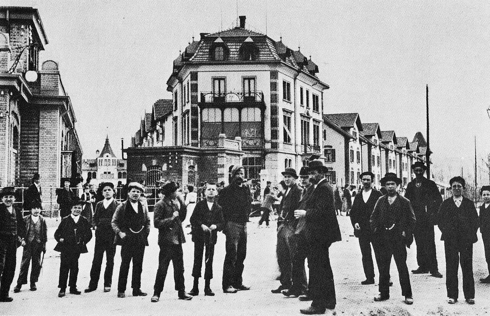
29Fabriken, Arbeiter und Auswanderer1800 – 1914Wie die Schweiz zu einem der ersten Industrieländer Europas wurde – und was das für Arbeiterinnen, Kinder und Auswanderer bedeutete.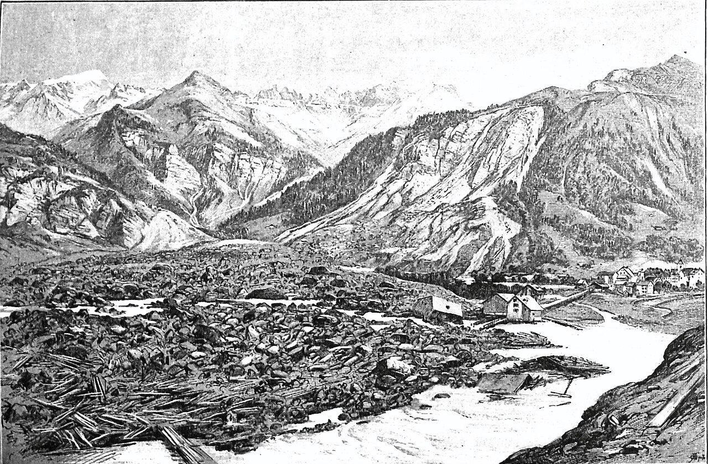
❦Der Bergsturz von ElmNebengeschichte · 1868 – 1882Wie Schieferabbau in eigener Regie am 11. September 1881 ein Glarner Dorf unter Fels begrub – und wie der Geologe Albert Heim daraus lernte, dass stürzende Berge fliessen können.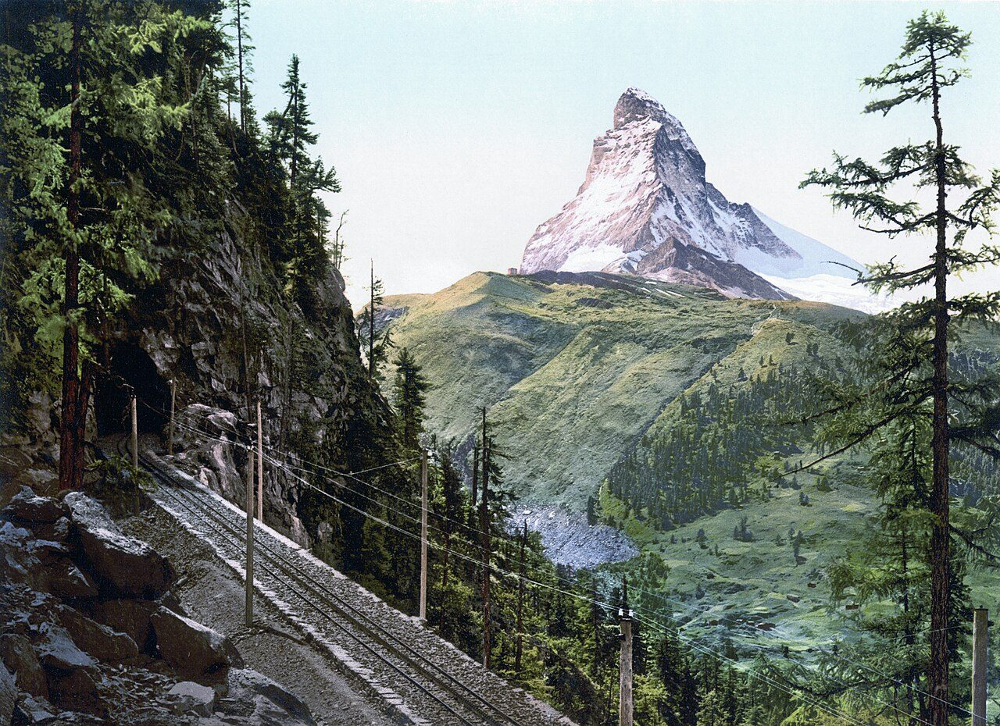
30Gipfel, Schokolade und Genies1850 – 1914Alpinismus und Tourismus, Schokolade und Kindermehl, Uhren, Heidi und Einstein: wie die Schweiz um 1900 ihr Bild in der Welt fand – und ihr eigenes Nationalgefühl. ❦Einstein in der SchweizNebengeschichte · 1895 – 1914Albert Einsteins Schweizer Jahre: Matura in Aarau, Studium in Zürich, Liebe zu Mileva Marić, das Patentamt in Bern, Professuren in Zürich – und ein Bürgerrecht fürs ganze Leben.
❦Einstein in der SchweizNebengeschichte · 1895 – 1914Albert Einsteins Schweizer Jahre: Matura in Aarau, Studium in Zürich, Liebe zu Mileva Marić, das Patentamt in Bern, Professuren in Zürich – und ein Bürgerrecht fürs ganze Leben.
Teil VIII Im Zeitalter der Weltkriege 1914 – 1945
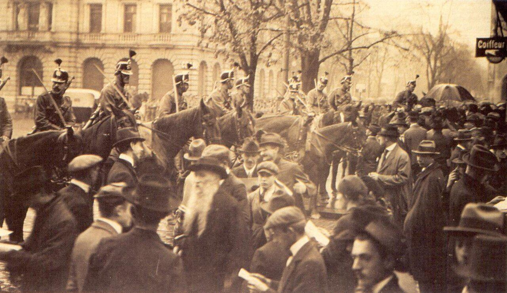
31Grenzbesetzung und Landesstreik1914 – 1920Wie die neutrale Schweiz den Ersten Weltkrieg überstand, warum sich Deutsch- und Welschschweiz entfremdeten und wie Hunger, Grippe und Klassengegensätze im Landesstreik von 1918 explodierten.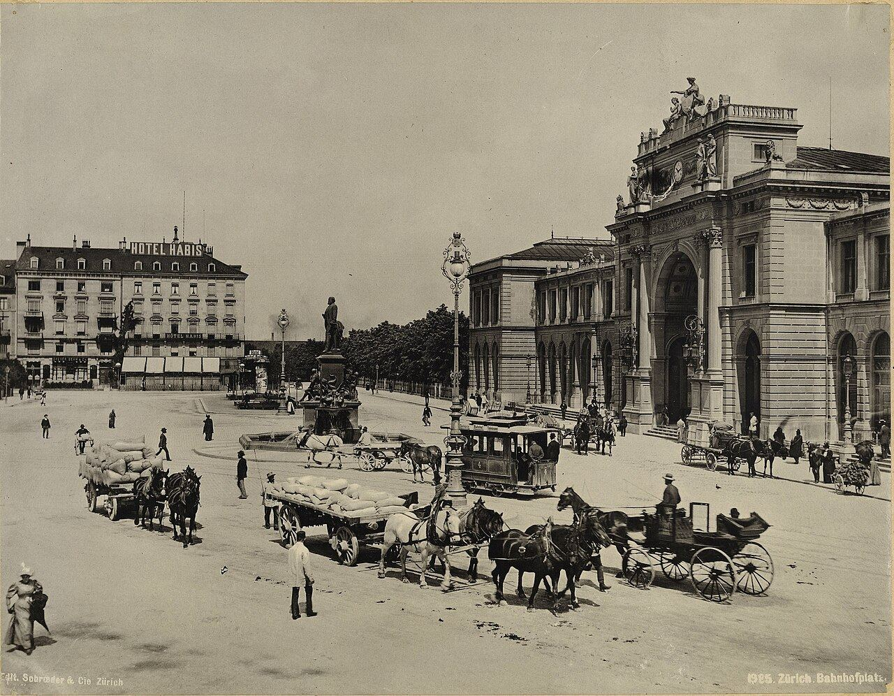
❦Lenin in Zürich – die Reise im plombierten WagenNebengeschichte · 1914 – 1917Lenins Jahre in Bern und Zürich, die geheimen Konferenzen von Zimmerwald und Kiental, zwei Zimmer an der Spiegelgasse – und die Fahrt durch Deutschland, die der Zürcher Fritz Platten organisierte.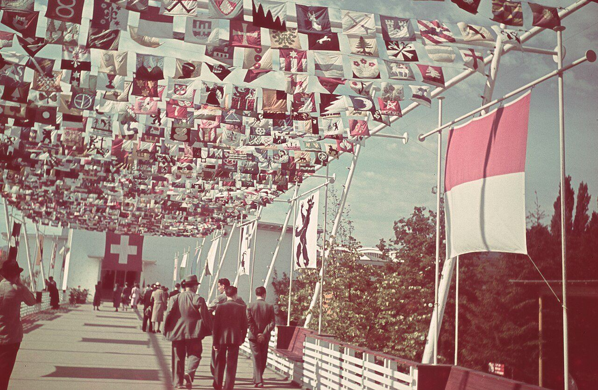
32Krise und Geistige Landesverteidigung1920 – 1939Wie die Schweiz zwischen 1920 und 1939 Weltwirtschaftskrise, Fronten und Schüsse in Genf erlebte – und sich mit Arbeitsfrieden, vierter Landessprache und der Landi auf schwere Zeiten einstellte.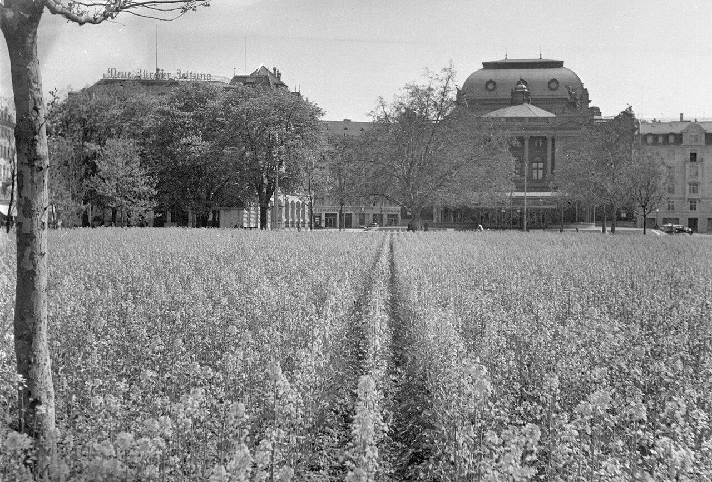
33Umzingelt: Die Schweiz im Zweiten Weltkrieg1939 – 1945Wie die Schweiz von 1939 bis 1945 zwischen den Achsenmächten überlebte – mit Aktivdienst und Réduit, Anbauschlacht und Rationierung, aber auch mit Zugeständnissen und Geschäften.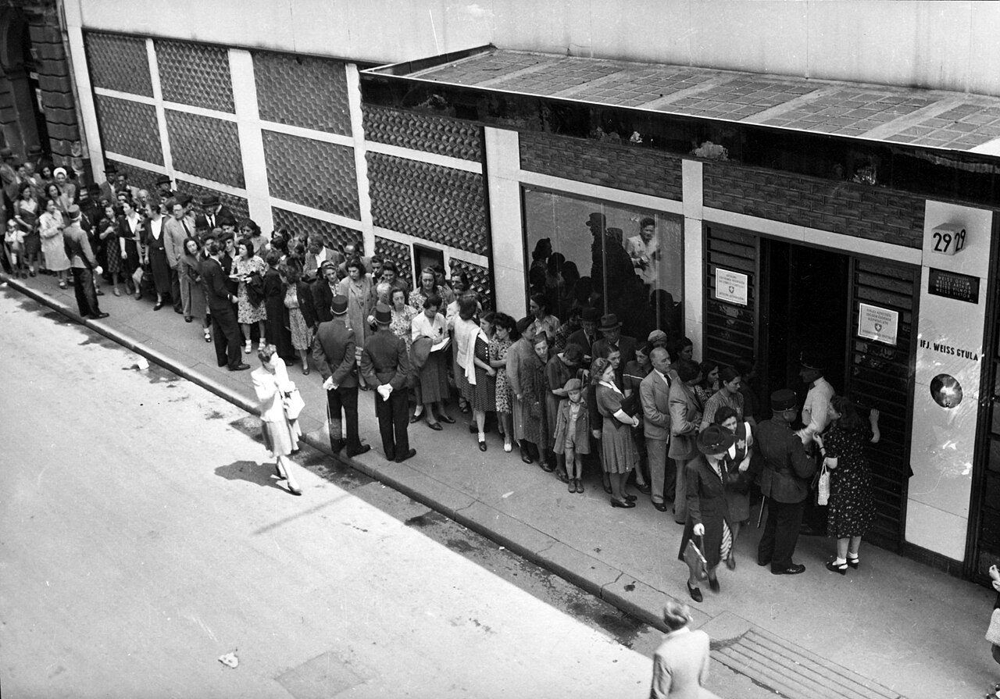
34Flüchtlinge, Gold und Verantwortung1933 – 2002Wie die Schweiz zwischen 1933 und 1945 Flüchtlinge aufnahm und abwies, Gold der Deutschen Reichsbank kaufte – und wie sie sich ab 1995 dieser Geschichte stellen musste.
Teil IX Die moderne Schweiz 1945 bis heute
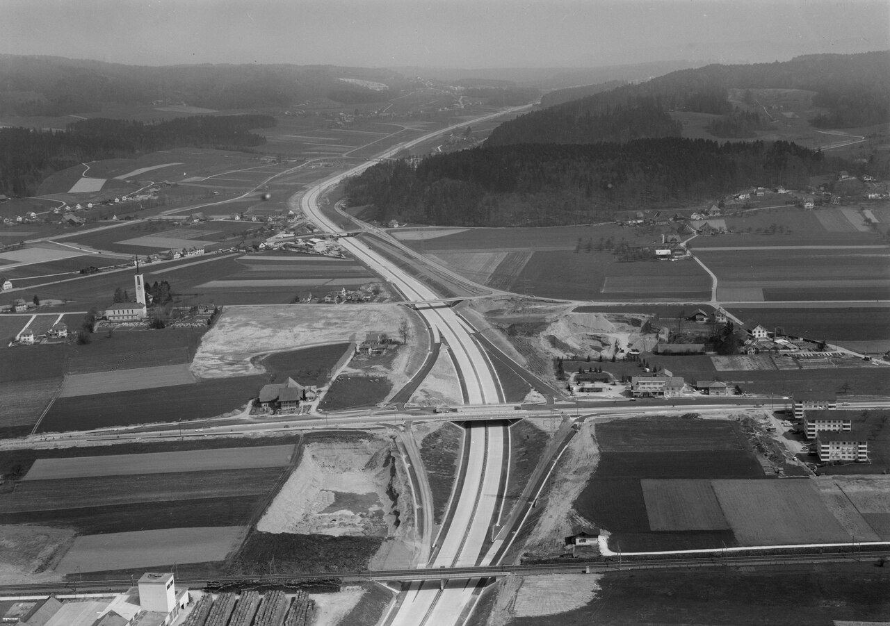
35Wohlstand im Kalten Krieg1945 – 1975Wie die Schweiz nach 1945 reich wurde, sich im Kalten Krieg zwischen Neutralität und Westbindung einrichtete – und wer den Preis für den Aufschwung bezahlte.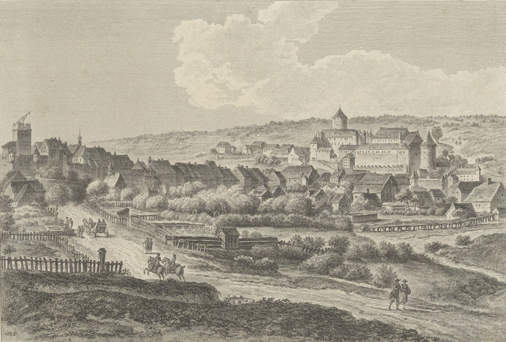
❦Das Fürstbistum Basel – was der Jura war, bevor er Kanton wurdeVor der Schweiz · 999 – 1815Wie aus einer Klosterschenkung ein geistliches Fürstentum zwischen Reich und Eidgenossenschaft wurde – und warum hier die Wurzeln der Jurafrage liegen.- 36Frauenstimmrecht und ein neuer Kanton1959 – 1994Vom Nein der Männer 1959 bis zum Frauenstreik 1991 – und von den Bombenanschlägen im Jura bis zur Gründung des 23. Kantons.
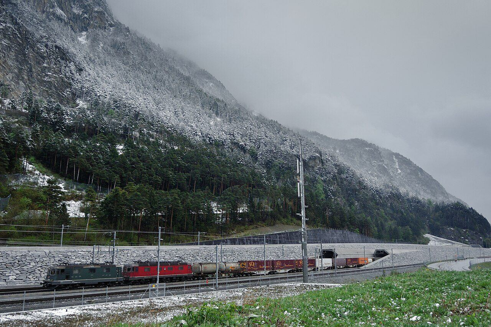
37Die Schweiz in der Welt1986 – 2026Von der Fichenaffäre über das EWR-Nein und die Bilateralen bis zu Bankenrettungen, Pandemie und dem Paket Schweiz–EU: die Schweiz seit 1986.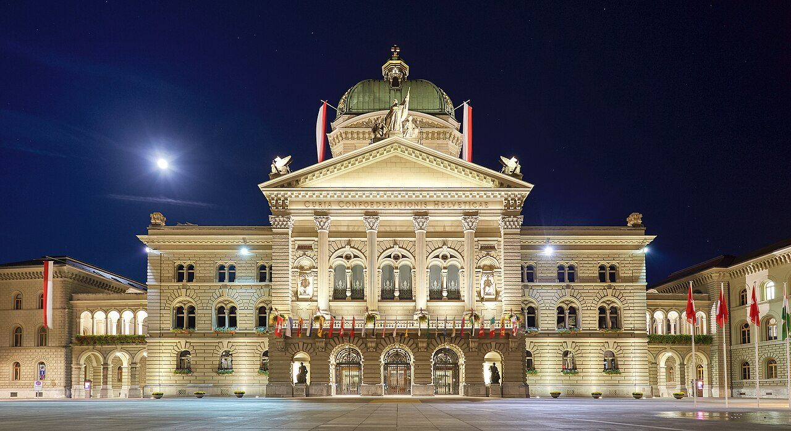
38Was die Schweiz zusammenhält1291 bis heuteEin Rückblick auf zweitausend Jahre: Welche Ereignisse haben die Schweiz zu dem gemacht, was sie heute ist?